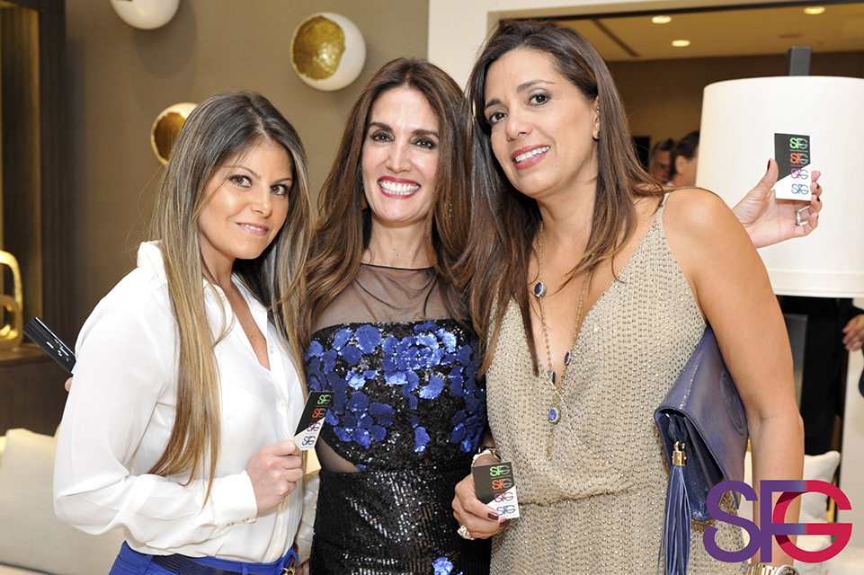
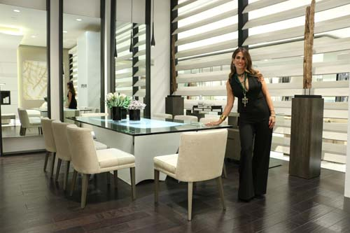

Susy Acosta is a Venezuelan - naturalized American - interior designer and entrepreneur who founded her interior design firm in 1997.She obtained her bachelor’s degree in Interior Design in Miami, and is licensed in the state of Florida.
She spent her early years in New York where she developed her keen eye for design and sense of style. Her clients have included renowned Grammy winner singers-songwriters, composers, music producers, and agents.There are few areas of design she hasn't explored, from furniture design , fabrics, lighting, flooring, to yachts, even artistic direction for clients events, to name but a few.


Acosta designs in the same way a director makes a film, developing scenarios that will lift people out of the everyday and into an imaginative, creative and balanced world.
She is the principal and visionary of her firm, Acosta personally sketches, draws, and documents the design details of each project. Her firm offers comprehensive construction management under her constant guidance.
Susy Acosta believed in the power of green long before environmental consciousness became smart, out of respect for the planet's future. The designer is a Goodwill Ambassador and facilitator for “Grove for Ghana”, an International Catholic movement supporting water wells for Africa.